I changed the way I think about scale when my son asked how many seconds it was until the weekend. The length of one second is a tangible thing to a child, equivalent to a tick-tock sound he can make on his own. Similarly, explanations of large numbers usually worked only when they started with the small and personal — the size of his room, the distance walked every morning to school, the height of scaffolding he likes to climb.
When I trim my son’s nails, I like to hold up a sliver of baby fingernail and say, “this is how much the tectonic plates have moved since we last cut your nails,” all because I read in a decade-old article that “Continents Split Up at the Same Speed Finger Nails Grow.” That factoid stayed with me because the sentence connected this global phenomenon so effectively to my literal fingertip. It reminds me that nothing would be too big or small to build a relationship with, if only we had the right unit of measurement.
Many units of measurement originate in our own bodies: hand, foot, hair, nose, thumb, finger, arm, step. In some cultures they still persist against standards. It is perhaps not only more intuitive but also logical to use our biological attributes as units. After all, part of the world we aim to measure — our built environment — grows out of the human body as its base unit.
Standardized units and systems of measurement are about human communication. While units often have to separate from their human origins in order to function properly, a shared unit builds connection between two acts of measurement. It does not matter how different the things we measure are. By measuring them we push them to exist in the same system and space.
A colloquial unit both precedes and follows systems of standardized units. Older humanistic units persist today because of their ability to manipulate the narrative of standards and not resist them. These units live where straightforward conversions and the world of feet, hairs, and nails coexist.
This is a map that measures the area that is in view in football fields.
Maybe your game is baseball, or soccer instead. Maybe your base unit is a place you know really well.
Some measurements are vague on purpose. They are concepts rather than units of measurements. For example, an asteroid or an iceberg is often a Texas.
Sometimes comparisons can stick, but they remain trivia, and may not bring us any closer to the object of comparison.
Part of having a lot of data at our fingertips today is that we have so much capacity to keep adding context by incorporating more datasets. We can connect them in endless ways in an attempt to generate a single meaningful connection. We can keep generating context until one clicks and becomes part of our experience.
When expanding and going outwards fail, though, another way is to rest and start from the small again. There are many evocative analog tools that people use to measure and record. For example, this tape measure is used by carpenters to write notes to themselves of what they have measured. It is borrowed by parents to have a portable but consistent measurement of a child’s height.
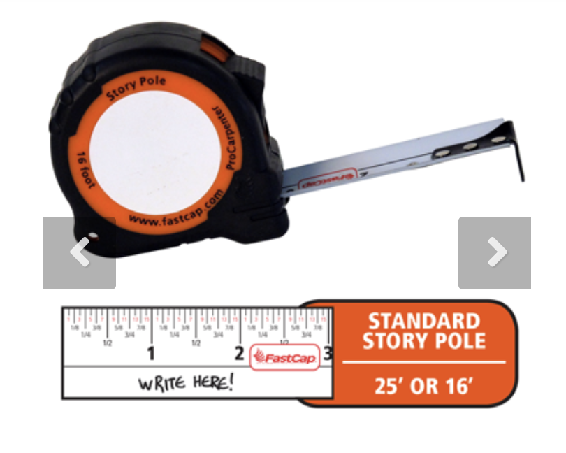
When my son stands at the top of the slide, it is the highest point he can get to in the park, and he is just a little taller than the adult male giraffe Michael George, one of the tallest giraffes living in the Bronx zoo.
When we walk to school, it is 3 city blocks that take about # steps, and anywhere between 6 and 30 minutes depending on the day.
And if you do it every day, where will you end up at the end of the year?
Measure a stair. If it is ## tall, then it would be # steps down to the bottom of the ocean, or # to the deepest part of the Grand Canyon.
Yet all these analogies and translations did not prepare me for when, one afternoon last spring, my son asked me about the size of an atom. It is too small, and I never knew how small. I can say there are a million atoms across a strand of hair, but it doesn’t mean a lot, not even to me.
If an atom was a dollar, then a grain of sand would be all the money in the world × 35,000.
If an atom is a person, then the population of the world would fit in a grain of sand a million times.
These are absurd comparisons. But the problem here is not the atom. It is the vast discrepancies that exist in supposedly human scaled numbers. These are absurdities of wealth, the scales of war, things that will only seem more alien as more dots are connected.
Here my personal and professional lives meet, at the struggle to explain to my child and myself the numbers that are too large, too small, and growing in quantity all the time.
End
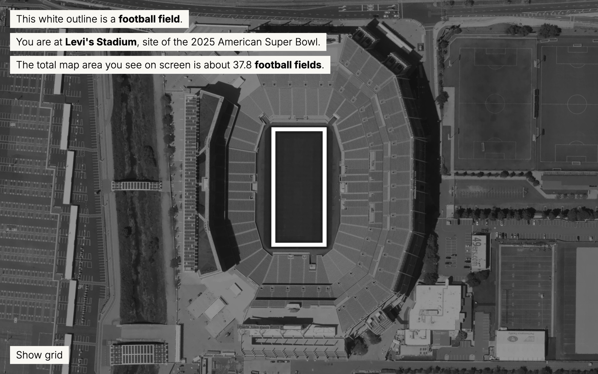
Football field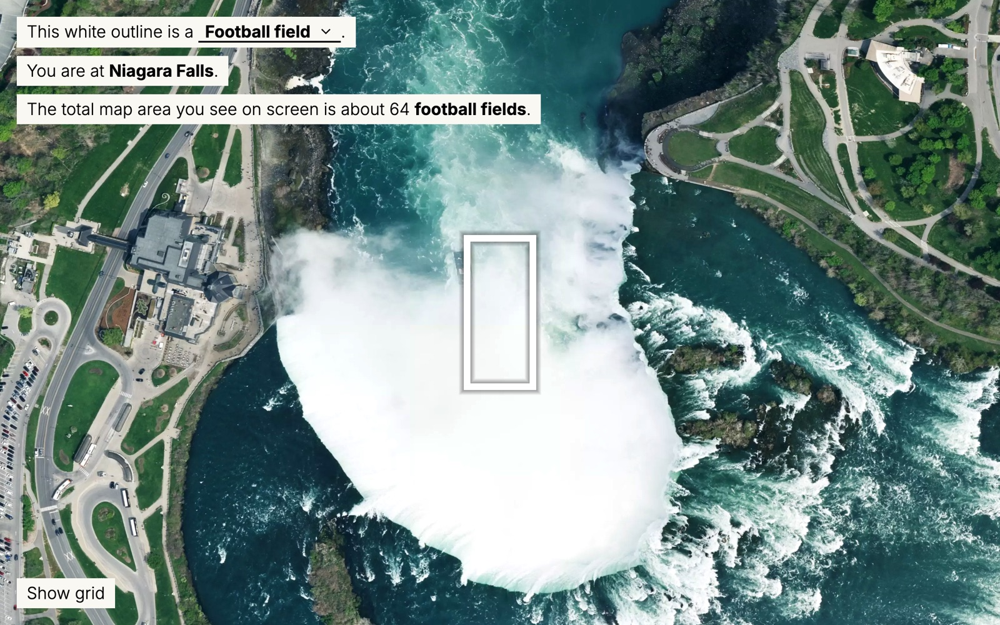
Sports fields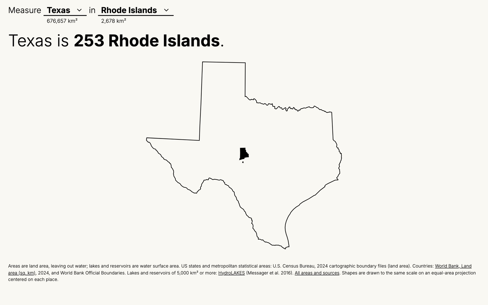
Nesting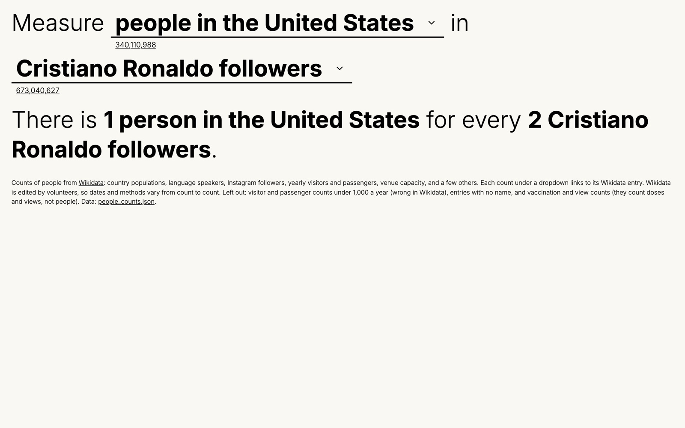
Population nesting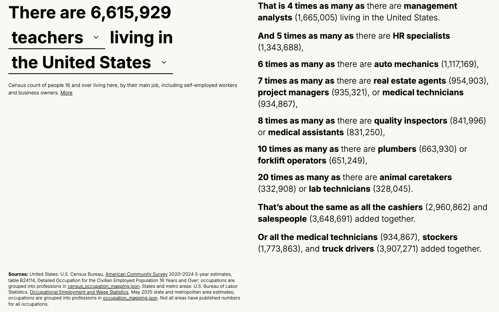
Jobs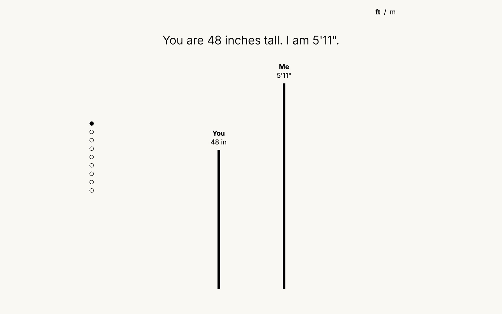
Heights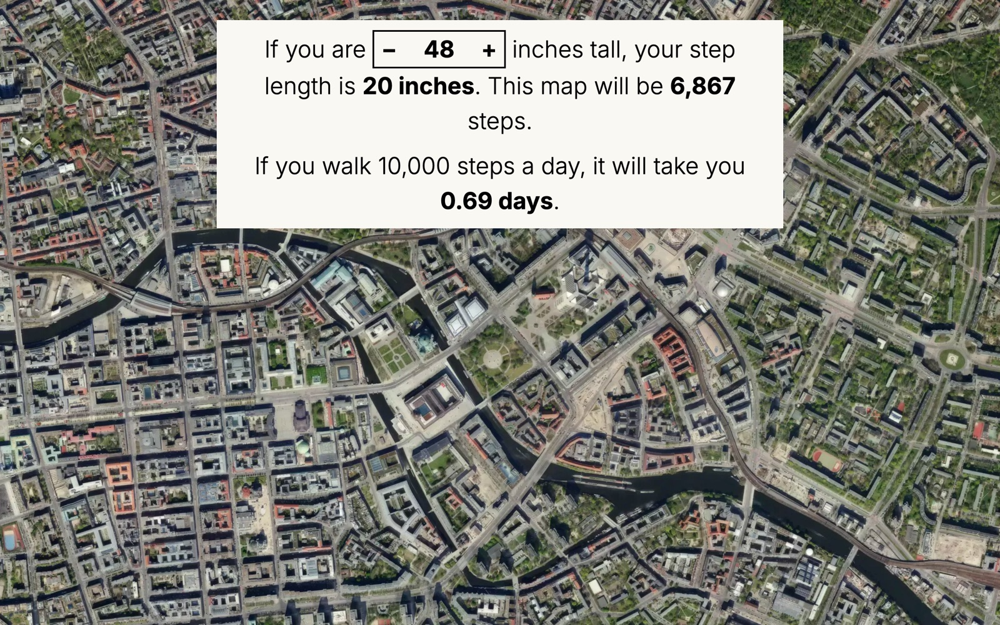
Steps across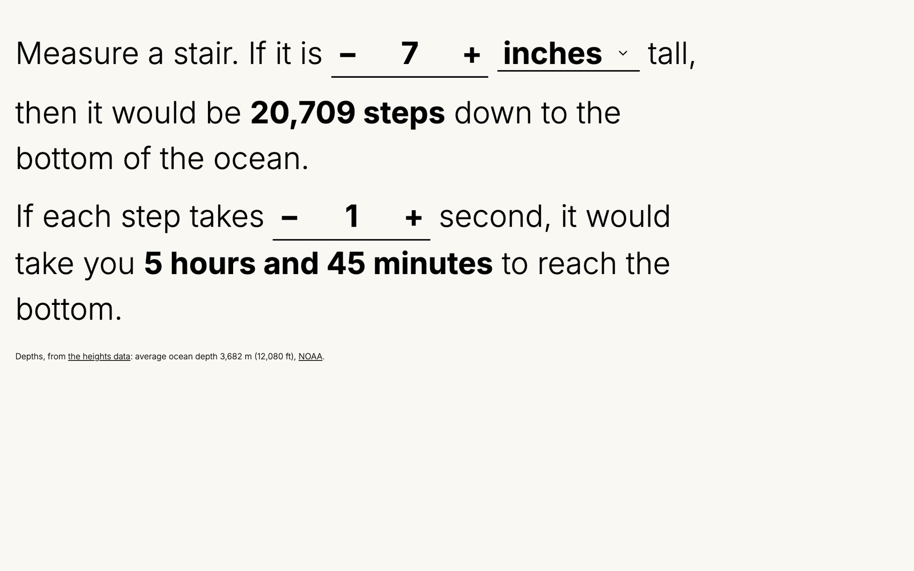
Stairs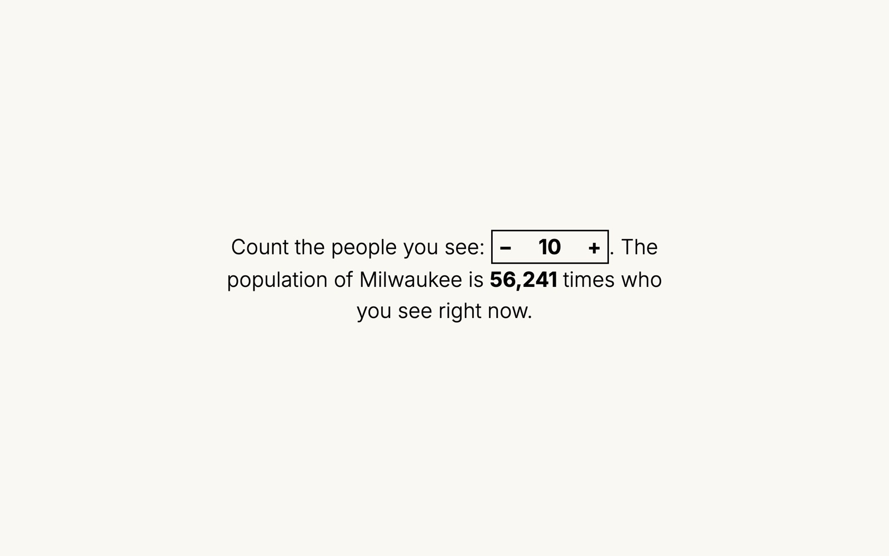
People in the room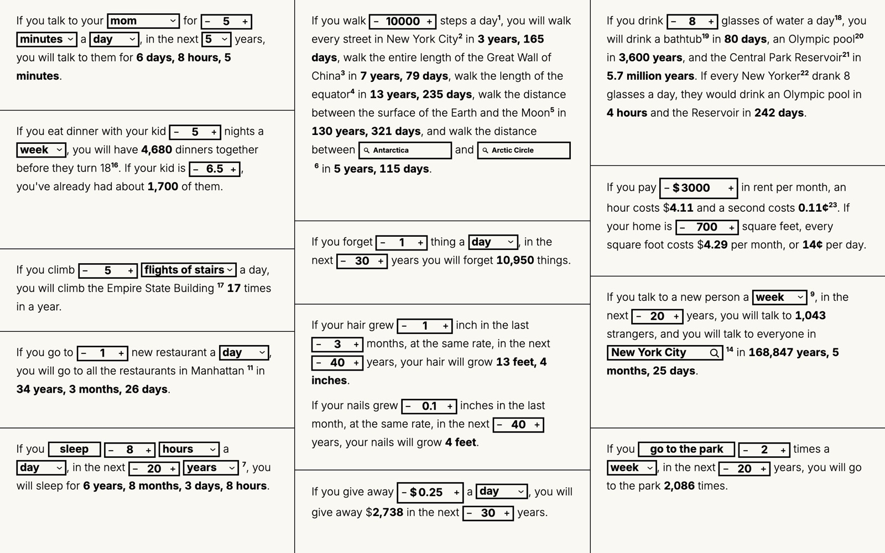
Things you can do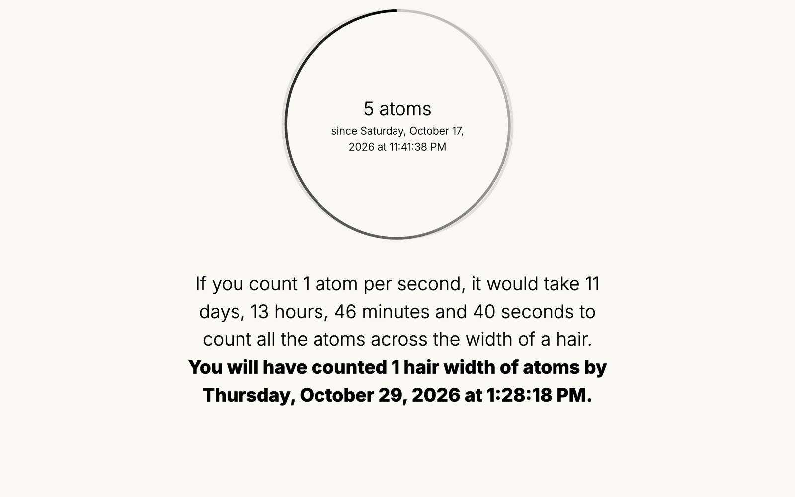
Atoms in seconds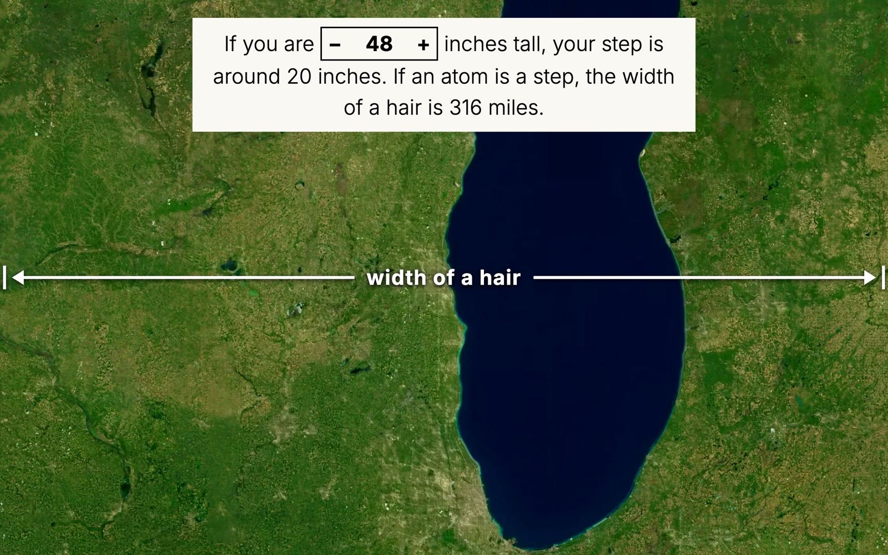
Atoms in steps